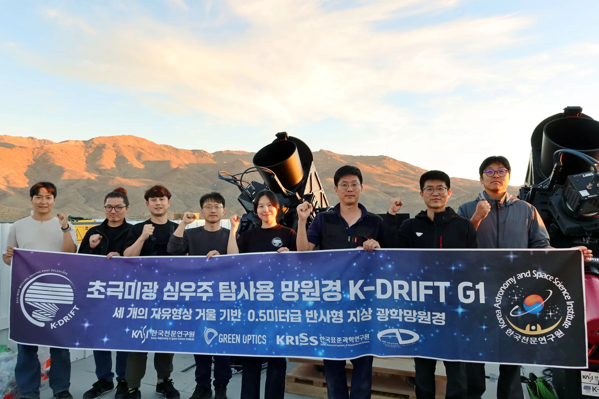

은하의 성장 과정
은하 주변 조석 구조에 남아 있는 충돌과 병합의 흔적을 추적합니다.

쉽게 보이지 않는 은하의 흔적.
K-DRIFT는 그 희미한 빛을 찾아
은하가 성장해 온 시간을 탐사합니다.
보현산천문대 K-DRIFT 돔 · 별의 일주 운동
사진: 전영범 / K-DRIFT 홍보자료
K-DRIFT G1, 칠레에서 첫 영상 관측 성공
보도자료 ↗넓게 퍼진 별빛과 은하 주변의 흔적.
실제 관측 영상으로 K-DRIFT의 연구를 만나보세요.
초확산은하부터 조석 구조와 은하단내광까지.
Fornax 은하단을 넓게 관측해 다양한 극미광 구조를 살펴봅니다.
우주항공청·한국천문연구원 · 2026.01.27 보도자료
은하 주변의 옅은 구조는 과거의 상호작용을 연구하는 단서입니다. 패스파인더와 스바루의 관측 영상을 함께 살펴봅니다.
K-DRIFT 프로젝트 제공 · 관측 조건이 다른 비교 영상
K-DRIFT는 초극미광 천체를 관측하기 위한 한국천문연구원의 연구 프로젝트입니다. 망원경 내부의 산란광을 줄이고 관측 영상의 배경을 균일하게 유지해, 넓고 희미한 구조를 찾습니다.
은하 주변 조석 구조에 남아 있는 충돌과 병합의 흔적을 추적합니다.
표면밝기가 낮은 초확산은하를 관측해 은하의 다양한 특성을 연구합니다.
은하 사이에 퍼진 은하단내광을 통해 은하단이 성장해 온 역사를 살펴봅니다.
빛의 경로를 가리지 않는 비차폐 자유곡면 광학계. 국내 연구진이 광학계 설계부터 제작·정렬·검증까지 협력해, 초극미광 관측에 맞춘 망원경을 개발했습니다.
과학임무에서 광학·광기계, 관측과 자료처리까지. 서로 다른 전문성을 가진 연구자들이 하나의 질문을 향해 함께합니다.
연구책임자 고종완 · 한국천문연구원
